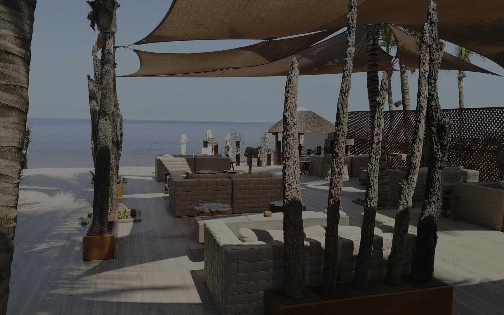
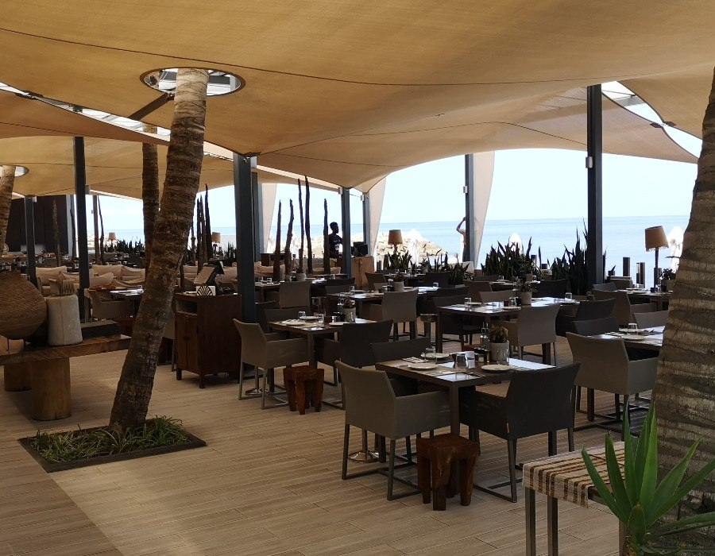
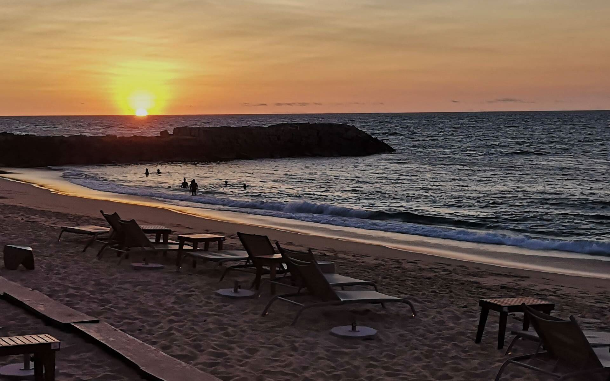
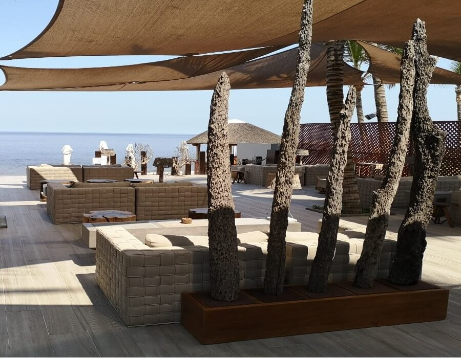
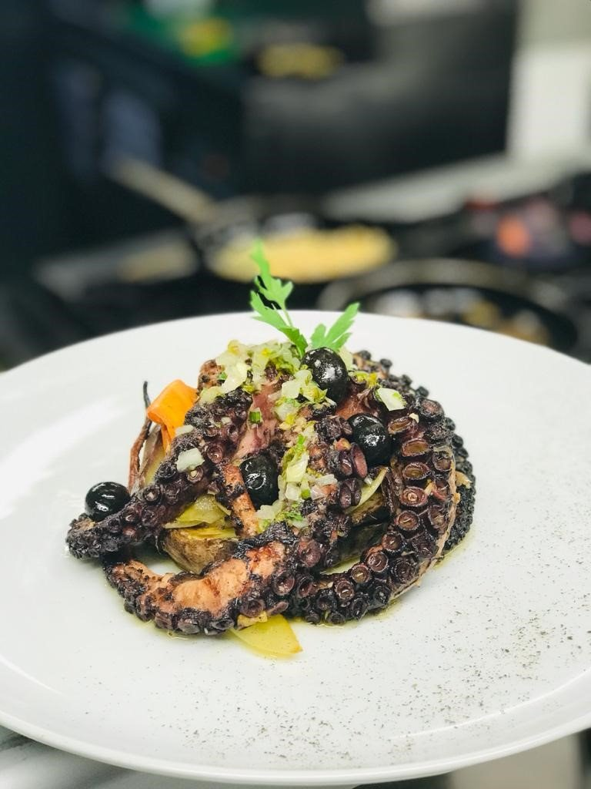
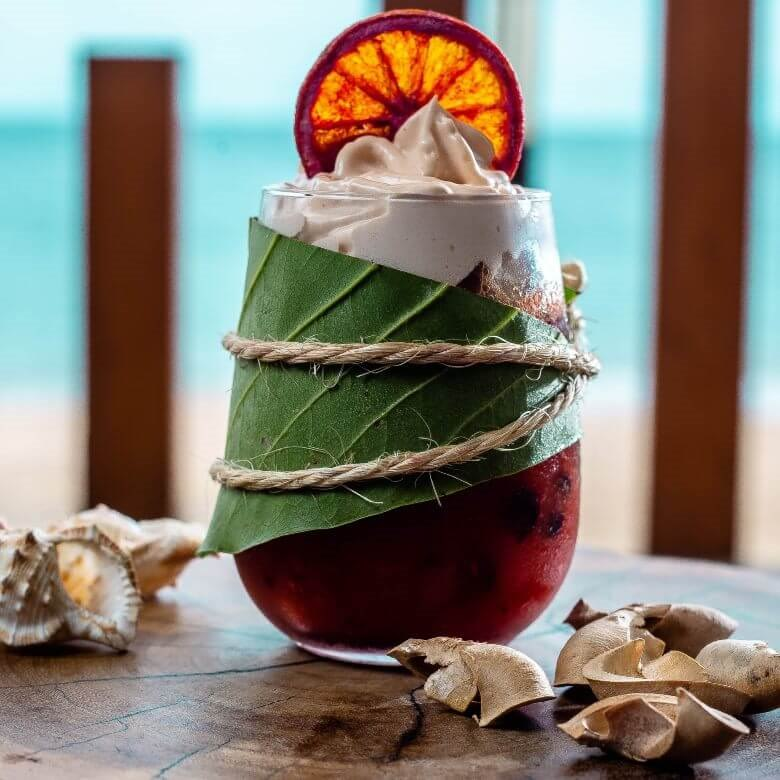
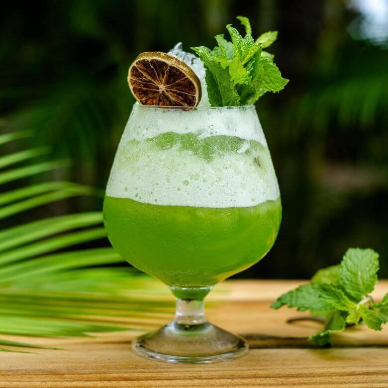
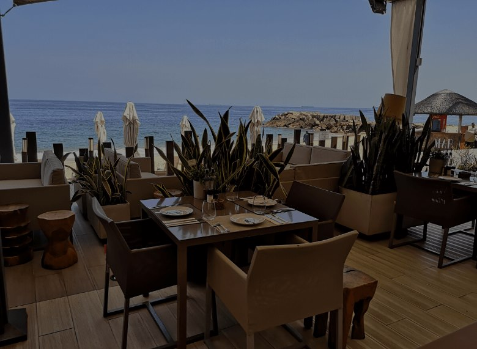

Gastronomia, música e o melhor pôr do sol de Luanda.a nossa assinatura
A identidade africana encontra uma elegância contemporânea: materiais naturais, luz quente e uma atmosfera que só existe aqui.

Nascido na Ilha de Luanda em 1998, o Café del Mar junta boa mesa, boa companhia e o Atlântico como cenário. Gastronomia, música e o melhor pôr do sol de Luanda.
Uma casa à beira-mar
Começámos com uma ideia simples: um lugar onde se come bem, se fica sem pressa e o mar está sempre à vista. Mais de duas décadas depois, continuamos a ser um ponto de encontro de Luanda, para um almoço de negócios, um jantar a dois ou a celebração de uma vida.
Gastronomia nacional e internacional, cocktails de autor e a brisa do Atlântico, todos os dias.


Os lugares e as pessoas
Clique nas imagens




Do restaurante ao beach club, cada canto do Café del Mar tem uma história para contar.
O que nos define
Gastronomia, música e o melhor pôr do sol de Luanda: as ideias que guiam tudo o que fazemos.

A sua mesa na Ilha
Um almoço longo, um jantar ao pôr do sol ou uma festa para 250 convidados. Reserve a sua mesa ou fale com a nossa equipa para planear algo especial.
Reservas, eventos privados e celebrações pensadas à sua medida.